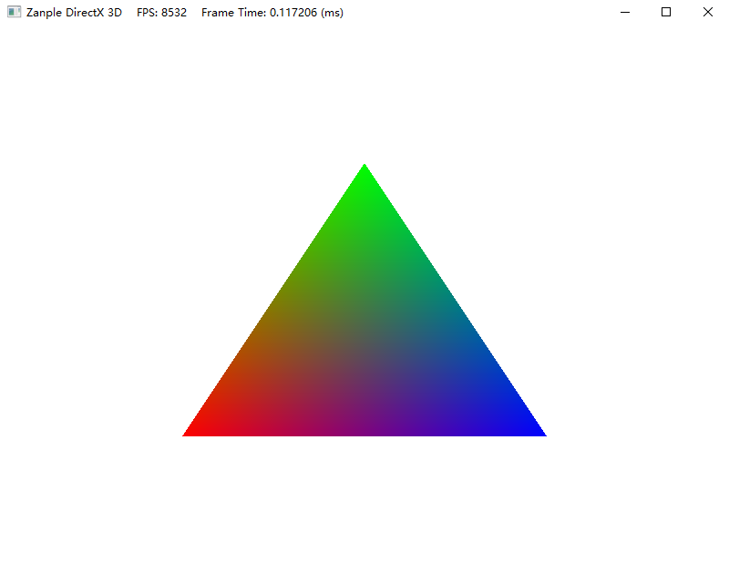

在完成Direct3D的初始化后，我们可以运行便可得到一个带有FPS与帧时间的窗口。
初始化部分分为Win32窗口的创建和Direct3D的初始化。
Win32部分可参考龙书附录或Win32 API高级编程教程，Direct3D的初始化可参考龙书第四章或X-Jun的博客。
1. DirectX11中的渲染管线
在开始绘制三角形前，先了解一下DirectX11中的渲染管线：

- Input Assembler（输入装配器）：“输入装配器”阶段使用固定的函数操作从内存中读取顶点。 然后，输入汇编会形成几何基元，并创建管道工作项。 自动生成的顶点标识符、实例标识符 (可用于顶点着色器) ， (几何着色器或像素着色器可用的基元标识符) 启用特定于标识符的处理。 图中的虚线显示特定于标识符的处理流程。
- Vertex Shader（顶点着色器）：顶点着色器阶段使用一个顶点作为输入，并输出一个顶点。
- Hull Shader（外壳着色器）：此球面着色器每个修补程序运行一次。 可以将 “球面” 着色器与输入汇编程序提供的修补程序结合使用。 “球面” 着色器可以将构成修补程序的输入控制点转换为输出控制点。 可以对 fixed 函数细化器阶段执行其他设置。 例如，”球面” 着色器可以输出 tess 系数，这是指示进行分割的数量。
- Tessellator（细化器/细分曲面）：细化器是一个固定函数单元，其操作由 “球面” 着色器中的声明定义。细化器对每个由凸着色器输出的修补程序运行一次。外凸着色器会生成 tess 因素，这些因素是通知细化器多少到进行分割 (生成几何和连接性) 到修补程序域的数字。
- Domain Shader（域着色器）：每个顶点调用一次域着色器，这是由细化器生成的。每个调用都通过其在泛型域上的坐标进行标识。域着色器的作用是将此坐标转换为有形 (例如，3-d 空间中的一个点) 用于域着色器的下向下传递。 修补程序的每个域着色器调用还会访问所有的 “球面” 着色器输出的共享输入。
- Geometry Shader（几何着色器）：几何着色器阶段使用一个基元作为输入，输出零个、一个或多个基元。 输出基元包含的数据可能会超出几何着色器的可能数量。 每个操作的输出数据总量 (顶点大小 x 顶点计数) 。
- Stream Output（流输出）：流输出阶段将(基元)流连接起来，从而将几何图形着色器的输出传递到输出缓冲区。 流输出与几何图形着色器相关联，并且两者同时进行了编程。
- Rasterizer（光栅器）：光栅器阶段剪辑 (包括自定义剪辑边界) 基元，对基元执行透视划分，实现视区和剪选，执行呈现目标选择，并执行基元设置。
- Pixel Shader（像素着色器）：“像素着色器”阶段使用一个像素作为输入，并输出同一位置上的一个像素或无像素。 像素着色器无法读取当前渲染器目标。
- Output Merger（输出合并）：输出合并阶段执行固定的函数呈现-目标混合、深度和模具操作。
2. 三角形绘制
在初始化后完成框架的搭建后，D3DApp与GameTimer这两个类基本就不需要进行修改了。
项目框架结构如下
| 类名 | 功能 |
|---|---|
| Main | WinMain函数的入口，程序的主入口 |
| D3DApp | Direct3D应用程序框架类 |
| GameTimer | 游戏计时器类 |
| GameApp | 游戏应用程序扩展类，游戏逻辑在这里实现，继承自D3DApp类 |
2.1 顶点与输入布局
首先定义顶点的结构体：由位置和颜色信息注册。
1 | struct VertexPosColor |
定义了顶点结构体之后，我们还需要向Direct3D提供该顶点结构体的描述，使它了解应怎样来处理结构体中的每个成员。用户提供给Direct3D的这种描述被成为输入布局描述(input layout description)，这里将输入布局描述中的D3D11_INPUT_ELEMENT_DESC设为：
1 | const D3D11_INPUT_ELEMENT_DESC GameApp::VertexPosColor::inputLayout[2] = { |
接着在GameApp::InitResource()中创建三角形顶点：
1 | //创建三角形顶点 |
在创建顶点布局前我们需要获取顶点着色器的编译文件：
1 | ComPtr<ID3DBlob> pBlob; |
最后我们需要将顶点布局绑定到渲染管线中：
1 | //绑定顶点布局 |
此外，我们还需要设置顶点的图元拓扑状态：
1 | //将基本拓扑设置为三角形列表（每组3个顶点） |
基本图元拓扑分为多种类型，如下图（可参考官方文档或龙书5.5输入装配器阶段）：

2.2 顶点缓冲区
为了使GPU可以访问顶点数组，就需要把它们放在缓存区（buffer）的GPU资源里。此处我们创建存储顶点的缓冲区——顶点缓冲区，在创建缓冲区前我们先创建顶点缓冲区的描述并进行设置：
1 | // 设置顶点缓冲区描述 |
同样将顶点缓冲区绑定到渲染管线中：
1 | //绑定顶点缓冲 |
在这里需要详细讲述一下D3D11_USAGE枚举类型对应的读写关系：
| CPU读 | CPU写 | GPU读 | GPU写 | |
|---|---|---|---|---|
| D3D11_USAGE_DEFAULT | √ | √ | ||
| D3D11_USAGE_IMMUTABLE | √ | |||
| D3D11_USAGE_DYNAMIC | √ | √ | ||
| D3D11_USAGE_STAGING | √ | √ | √ | √ |
对于
D3D11_USAGE_DEFAULT类型的缓冲区，应当使用ID3D11DeviceContext::UpdateSubresource方法来更新缓冲区资源，它的原理是将内存中的某段数据传递到显存中，然后再将该显存中的数据复制到在显存中的缓冲区。这种更新方式我们是无法直接访问缓冲区的内容的。在绘制完成/开始前调用可以比较快地更新显存中的数据。而对于
D3D11_USAGE_DYNAMIC类型的缓冲区，则应当使用ID3D11DeviceContext::Map和ID3D11DeviceContext::Unmap方法，将显存中的数据映射到内存中，然后修改该片内存的数据，最后将修改好的数据映射回显存中。这种更新方式我们是可以直接获取来自显存的数据的，但代价就是更新的效率会比上面的方式更低一些。
2.3 着色器
绘制三角形前，我们需要创建两个着色器：顶点着色器和像素着色器。
在编译着色器前先对Shader文件的属性进行设置：
并更改着色器的输出文件：
另外，可以安装Visual Studio的HLSL插件实现着色器代码的高亮等：
2.3.1 顶点着色器
1 | struct VSOut |
2.3.2 像素着色器
1 | float4 main(float3 color : Color) : SV_TARGET //像素着色器无需指定每个像素的位置 |
2.3.3 着色器语义
上述着色器用到了几个HLSL的语义：
| 语义名 | 具体含义 |
|---|---|
| POSITION | 描述该变量是一个坐标点 |
| SV_POSITION | 说明该顶点的位置在从顶点着色器输出后，后续的着色器都不能改变它的值，作为光栅化时最终确定的像素位置 |
| COLOR | 描述该变量是一个颜色 |
| SV_Target | 说明输出的颜色值将会直接保存到渲染目标视图的后备缓冲区对应位置 |
2.3.4 着色器的创建和绑定
完成Shader文件后需要在GameApp中进行创建与绑定：
1 | ComPtr<ID3DBlob> pBlob; |
1 | //绑定着色器 |
至此，完成三角形的绘制。

3. 多边形的绘制（拓展）
如果需要绘制上图这样一个多边形，先将其拆分为多个三角形。

对于这样一个由多个三角形组成的多边形，如果按照上面画三角形的思路：将每一个三角形的顶点存储到顶点缓存中，再对每一个三角形进行绘制。这样虽然也能够绘制出多边形，但是有很多重复的顶点。
因此引入索引的概念，对于上面这个多边形，我们只存储其外圈6个顶点。并根据每个顶点的存储顺序创建索引，并根据索引来绘制每个三角形。

与顶点相似，为了使GPU可以访问索引数组，构建一个存储索引的缓冲区——索引缓冲区，并创建一个索引缓冲区描述并将其绑定到渲染流水线上。
1 | //索引数组 |
再将绘制函数改为索引绘制即可：
1 | //绘制多边形 |
参考：
1.DirectX11 With Windows SDK–02 顶点/像素着色器的创建、顶点缓冲区
2.Beginner C++ Game Programming Tutorial 0 DirectX
3.《DirectX 12 3D游戏开发实战 第4章》